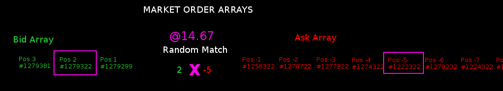

Welcome to the Ritchie Stock Exchange™!
"Ritchie" is an Alternative Trading System (ATS) that is created, built, run, and managed by the open-source community.1
In the spirit of "The Open Source Way,"2 we believe that a market--and its data--must be free, open, and transparent to be "fair and orderly:"
- Designed for Algorithmic Trading.
- No "non-display" fees. Ritchie is designed from the ground up for non-display.
- Affordable colocation fees. Colocation is affordable at Ritchie. Your algos can be run on a device as small as a Raspberry PiTM.
- Random matching algorithm. Not a FIFO order queue, an array where orders are matched randomly.
- Real-time tick data are free.Easily accessed through our API.
- Open Order Book/DOM.
- Open API. Designed for algorithmic trading and quantitative analysis.
- Open Architecture. The inner workings of the exchange are open for public scrutiny.
- Open Order Arrays.
- Open Source!

Being first into the array does not guarantee getting matched first. A random number is generated to determine which order gets matched next:
All that being said, there are limits:
- Anonymity is strictly enforced. The identity of market participants is not public information.
- Commissions are charged. An industry-standard fee schedule is equitably applied to all transactions.
In sum, the guiding principle at Ritchie is that of a meritocracy:
In a meritocracy, the best ideas win. In a meritocracy, everyone has access to the same information. Successful work determines which projects rise and gather effort from the community.2
Why contribute to Ritchie?
You will find here the best, brightest, and most innovative people in the world: The Open Source Community. These are the people who built Linux, FireFox, MySQL, Wordpress, Nodejs, myBB (which drives our forum), and countless other successful projects.
Ritchie provides you with a great opportunity to participate in all aspects of making a market:
- Manage an order book
- Match orders
- FIX protocol
- Multithreading
- Low latency
- Cryptography and security
- API creation
Some of the most challenging problems and powerful systems exist in the Financial industry. You will grow from working on this project.
Experience in finance can be hard to obtain. Often people seeking work in this industry find themselves between a rock and a hard place: they need experience in the industry to find a job, but can't find a job in the industry because they don't have experience. Ritchie can help to bridge that gap, and give you an opportunity to work on a financial system.
Why List on Ritchie?
If you have a winning idea, then this is the place for you. In no other venue can you so easily connect with investors. Ritchie is a profitable market where innovation and creativity thrive.
How is Ritchie organized?
- http://ritchiestockexchange.com is the responsive, web-based front-end.
- http://ritchiestockexchange.net are the forums, the center of the community.
- ritchiestockexchange.org is the governing site. <---- You are here.
- Code is hosted on Github
What is the Ritchie technology stack?
- The responsive Web-based front-end is JavaScript and Angular 2.
- The market server is Linux: Red Hat/Centos.
- The back-end and market engine is a mix of C and C++; at this point, -std=c++11
- The web server is either Apache or Node. We're still deciding.
- The database is MySQL
- FIX protocol is used for communication
- Objective-C, Swift, and Xcode for iOS and Apple
- Android and ADK for Samsung, Google, et al.
What is the origin of the "Ritchie" name?
This exchange is named after Dennis Ritchie:
Dennis MacAlistair Ritchie (September 9, 1941 – c. October 12, 2011) was an American computer scientist. He created the C programming language and, with long-time colleague Ken Thompson, the Unix operating system. Ritchie and Thompson received the Turing Award from the ACM in 1983, the Hamming Medal from the IEEE in 1990 and the National Medal of Technology from President Bill Clinton in 1999. Ritchie was the head of Lucent Technologies System Software Research Department when he retired in 2007. He was the "R" in K&R C, and commonly known by his username dmr."3
How do I get involved?
The first step is to post on the forums, in the "I'm in!" section, at alphastockexchange.net. There we will discuss with you what you'd like to work on. You will then be assigned to a team, and can start contributing.
Legal
Past performance is not necessarily indicative of future results.
Ritchie is located in the U.S.A., falls under Reg ATS (17 CFR 242.301), and fully complies with all applicable laws.
1. https://www.law.cornell.edu/cfr/text/17/242.301
2. https://opensource.com/open-source-way
3. https://en.wikipedia.org/wiki/Dennis_Ritchie